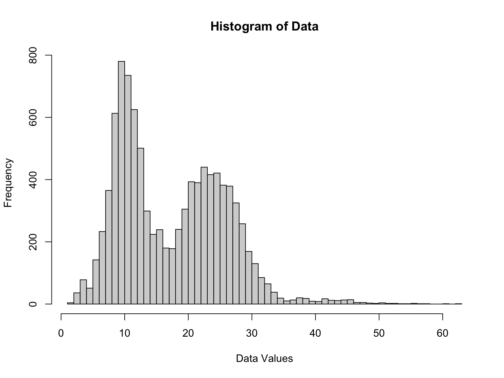
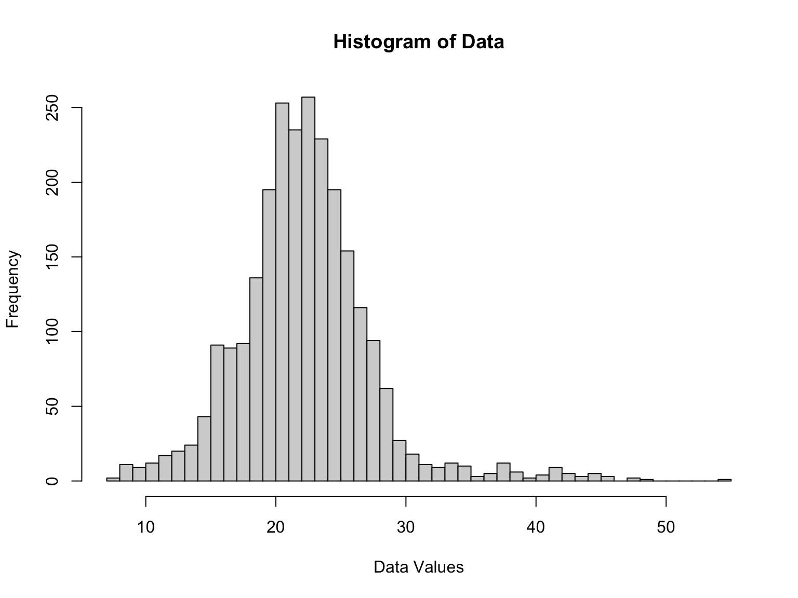

Statistical Analysis
Independent Samples T-tests
We will first conduct independent samples t-tests to see if there is a statistical relationship between gender and two of our indicators of mental health access:
- Took prescription medication and/or received counseling or therapy for mental health
- Needed counseling or therapy for mental health but did not get it
Even though the independent samples t-test assumes normality, our sample size (50,000-90,000) is large. The Central Limit Theorem often allows the t-test to be used even when the population distribution is not normal, because the distribution of the sample means will tend to be normal.
P-values less than 0.05 will be considered as statistically significant.
Took prescription medication and/or received counseling or therapy for mental health
The first independent samples t-test shows statistically significant differences in prescription medication and/or counseling or therapy for mental health rates. Men and women had statistically different mean rates of taking prescription medication for mental health and/or receiving counseling or therapy from 2020 to 2022 in the United States.
gender_received =
tidydata |>
filter(
indicator == "Took Prescription Medication for Mental Health And/Or Received Counseling or Therapy",
state == "United States",
group == "Sex",
subgroup %in% c("Male", "Female")
) |>
dplyr::select(week_number, value, subgroup) |>
pivot_wider(
names_from = "subgroup",
values_from = "value") |>
janitor::clean_names()
gender_received |>
summarise(
t_statistic = t.test(male, female)$statistic,
p_value = t.test(male, female)$p.value) |>
knitr::kable()| t_statistic | p_value |
|---|---|
| -39.52768 | 0 |
Needed counseling or therapy but did not get it
The second independent samples t-test shows statistically significant differences in rates of needing counseling or therapy for mental health but not getting it. Men and women had statistically different mean rates of needing counseling or therapy for mental health but not getting it from 2020 to 2022 in the United States.
gender_needed =
tidydata |>
filter(
indicator == "Needed Counseling or Therapy But Did Not Get It",
state == "United States",
group == "Sex",
subgroup %in% c("Male", "Female")
) |>
dplyr::select(week_number, value, subgroup) |>
pivot_wider(
names_from = "subgroup",
values_from = "value") |>
janitor::clean_names()
gender_needed |>
summarise(
t_statistic = t.test(male, female)$statistic,
p_value = t.test(male, female)$p.value) |>
knitr::kable()| t_statistic | p_value |
|---|---|
| -24.12529 | 0 |
ANOVA: sexual orientation
sexuality_received =
tidydata |>
filter(
indicator == "Took Prescription Medication for Mental Health And/Or Received Counseling or Therapy",
state == "United States",
group == "Sexual orientation",
week_number %in% c(24:33)) |>
dplyr::select(week_number, value, subgroup) |>
pivot_wider(
names_from = "subgroup",
values_from = "value") |>
janitor::clean_names()sexuality_needed =
tidydata |>
filter(
indicator == "Needed Counseling or Therapy But Did Not Get It",
state == "United States",
group == "Sexual orientation",
week_number %in% c(24:33)) |>
group_by(subgroup)Check normality
ggplot(tidydata, aes(sample = value)) +
stat_qq() +
stat_qq_line() hist(tidydata$value, breaks = "FD", main = "Histogram of Data", xlab = "Data Values") The plot appears to be a Q-Q (quantile-quantile) plot showing that the data deviates from the expected normal distribution, particularly in the tails, indicating the presence of outliers or a heavy-tailed distribution.
The histogram illustrates a bimodal frequency distribution of data values, with significant concentrations of observations around two central peaks, suggesting the presence of two subpopulations within the dataset. The data range from near 0 to just over 60, with the majority of values clustered between 5 and 30, and a notable right skew indicating a tail of higher values extending towards 60. This skewness and the thinning bars towards the right may also point to the existence of outliers or extreme values in the dataset. The bimodal nature and the distribution’s spread underscore the potential complexity within the data, hinting at varied underlying characteristics or groups.
ggplot(tidydata, aes(sample = log(value))) +
stat_qq() +
stat_qq_line()
hist(log(tidydata$value), breaks = "FD", main = "Histogram of Data", xlab = "Data Values") Despite the application of a logarithmic transformation to the data, the
resulting distribution does not conform to normality. This is evidenced
by the Q-Q plot, which exhibits significant deviations from the line of
normality, particularly in the tails. Such persistent non-normality
suggests that the underlying data may not be log-normally distributed,
or there may be influential outliers that resist transformation.
Alternative transformations or non-parametric methods may be required to
address these distributional issues.
Despite the application of a logarithmic transformation to the data, the
resulting distribution does not conform to normality. This is evidenced
by the Q-Q plot, which exhibits significant deviations from the line of
normality, particularly in the tails. Such persistent non-normality
suggests that the underlying data may not be log-normally distributed,
or there may be influential outliers that resist transformation.
Alternative transformations or non-parametric methods may be required to
address these distributional issues.
tidydata=tidydata |> mutate(subgroup=as.factor(subgroup),group=as.factor(group))
summary(pull(tidydata, value))## Min. 1st Qu. Median Mean 3rd Qu. Max.
## 1.40 10.30 16.20 17.45 24.00 62.90The summary statistics for the value dataset indicate a right-skewed distribution: the minimum value is 1.40, the first quartile is 10.30, the median is 16.20, and the third quartile is 24.00, with a considerably higher maximum value of 62.90. The mean, or average, is 17.45, which is higher than the median, further suggesting a distribution with a right tail. The broad range from the minimum to the maximum value points to a wide variation in the data, and the displacement of the mean towards the higher end of the range hints at the presence of outliers or a long tail to the right of the median.
Kruskal-Wallis test
kruskal_result=kruskal.test(value ~ subgroup, data = tidydata)Kruskal-Wallis Chi-squared=1680.6. This is the test statistic that follows a chi-squared distribution under the null hypothesis. A value of 1680.6 is quite large, suggesting a significant difference.
The p-value is less than 2.2e-16. It effectively means that the p-value is extremely small, much less than the commonly used significance levels (like 0.05 or 0.01), indicating that there is a statistically significant difference in the medians across the groups.
In summary, the test result is highly significant, which leads to the rejection of the null hypothesis of equal medians. Therefore, we have sufficient evidence to say that not all group medians are equal.
Continue Data Explorartion:
Now we are going to break down the dataset into four subgroups based the Indicator’s categories. We are going to explore the distribution of each subgroup and perform the the most appropriate test.
Indicator1=tidydata |> filter(indicator=="Took Prescription Medication for Mental Health")
Indicator2=tidydata |> filter(indicator=="Received Counseling or Therapy")
Indicator3=tidydata |> filter(indicator=="Took Prescription Medication for Mental Health And/Or Received Counseling or Therapy")
Indicator4=tidydata |> filter(indicator=="Needed Counseling or Therapy But Did Not Get It")- Step 1: Check Normality for Group of people who Took Prescription Medication for Mental Health.
shapiro_test_result <- shapiro.test(pull(Indicator1,value))
hist(Indicator1$value, breaks = "FD", main = "Histogram of Data", xlab = "Data Values") Shapiro-Wilk normality test result : (W = 0.93709, p-value < 2.2e-16), The p-value is extremely small (< 2.2e-16), which provides strong evidence suggest that the data does not come from a normal distribution, and hence, we reject the null hypothesis of normality at 0.05 level of significance.
- Step2: Perform Kruskal-Wallis test for indicator 1 dataset
kruskal_result=kruskal.test(value ~ subgroup, data = Indicator1)Kruskal-Wallis Chi-squared=1812.7. This is the test statistic that follows a chi-squared distribution under the null hypothesis. A value of 1812.7 is quite large, suggesting a significant difference.
The p-value is less than 2.2e-16. It effectively means that the p-value is extremely small, much less than the commonly used significance levels (like 0.05 or 0.01), indicating that there is a statistically significant difference in the medians across the groups.
In summary, the test result is highly significant, which leads to the rejection of the null hypothesis of equal medians. Therefore, we have sufficient evidence to say that not all group medians are equal.
- Step 3: Check normality for Group of people who Received Counseling or Therapy
shapiro_test_result <- shapiro.test(pull(Indicator2,value))
hist(Indicator2$value, breaks = "FD", main = "Histogram of Data", xlab = "Data Values")Shapiro-Wilk normality test result : (W = 0.83846, p-value < 2.2e-16), The p-value is extremely small (< 2.2e-16), which provides strong evidence suggest that the data does not come from a normal distribution, and hence, we reject the null hypothesis of normality at 0.05 level of significance.
- step 4: Perform Kruskal-Wallis test for indicator 2 dataset
kruskal_result=kruskal.test(value ~ subgroup, data = Indicator2)Kruskal-Wallis Chi-squared=1784.5. This is the test statistic that follows a chi-squared distribution under the null hypothesis. A value of 1784.5 is quite large, suggesting a significant difference.
The p-value is less than 2.2e-16. It effectively means that the p-value is extremely small, much less than the commonly used significance levels (like 0.05 or 0.01), indicating that there is a statistically significant difference in the medians across the groups.
In summary, the test result is highly significant, which leads to the rejection of the null hypothesis of equal medians. Therefore, we have sufficient evidence to say that not all group medians are equal.
- Step 5: Check normality for Group of people who Took Prescription Medication for Mental Health And/Or Received Counseling or Therapy
shapiro_test_result <- shapiro.test(pull(Indicator3,value))
hist(Indicator3$value, breaks = "FD", main = "Histogram of Data", xlab = "Data Values") Shapiro-Wilk normality test result : (W = 0.95871, p-value <
2.2e-16), The p-value is extremely small (< 2.2e-16), which provides
strong evidence suggest that the data does not come from a normal
distribution, and hence, we reject the null hypothesis of normality at
0.05 level of significance.
Shapiro-Wilk normality test result : (W = 0.95871, p-value <
2.2e-16), The p-value is extremely small (< 2.2e-16), which provides
strong evidence suggest that the data does not come from a normal
distribution, and hence, we reject the null hypothesis of normality at
0.05 level of significance.
- step 6: Perform Kruskal-Wallis test for Indicator 3 dataset
kruskal_result=kruskal.test(value ~ subgroup, data = Indicator3)Kruskal-Wallis Chi-squared=1750.7. This is the test statistic that follows a chi-squared distribution under the null hypothesis. A value of 1750.7 is quite large, suggesting a significant difference.
The p-value is less than 2.2e-16. It effectively means that the p-value is extremely small, much less than the commonly used significance levels (like 0.05 or 0.01), indicating that there is a statistically significant difference in the medians across the groups.
In summary, the test result is highly significant, which leads to the rejection of the null hypothesis of equal medians. Therefore, we have sufficient evidence to say that not all group medians are equal.
- Step 7: Check normality for Group of people who Needed Counseling or Therapy But Did Not Get It.
shapiro_test_result <- shapiro.test(pull(Indicator4,value))
hist(Indicator4$value, breaks = "FD", main = "Histogram of Data", xlab = "Data Values") Shapiro-Wilk normality test result : (W = 0.8161, p-value < 2.2e-16),
The p-value is extremely small (< 2.2e-16), which provides strong
evidence suggest that the data does not come from a normal distribution,
and hence, we reject the null hypothesis of normality at 0.05 level of
significance.
Shapiro-Wilk normality test result : (W = 0.8161, p-value < 2.2e-16),
The p-value is extremely small (< 2.2e-16), which provides strong
evidence suggest that the data does not come from a normal distribution,
and hence, we reject the null hypothesis of normality at 0.05 level of
significance.
- step 8: Perform Kruskal-Wallis test for Indicator 4 dataset
kruskal_result=kruskal.test(value ~ subgroup, data = Indicator4)Kruskal-Wallis Chi-squared=1539.6. This is the test statistic that follows a chi-squared distribution under the null hypothesis. A value of 1539.6 is quite large, suggesting a significant difference.
The p-value is less than 2.2e-16. It effectively means that the p-value is extremely small, much less than the commonly used significance levels (like 0.05 or 0.01), indicating that there is a statistically significant difference in the medians across the groups.
In summary, the test result is highly significant, which leads to the rejection of the null hypothesis of equal medians. Therefore, we have sufficient evidence to say that not all group medians are equal.
Linear Modeling
Step 1
Import the tidy dataset
library(tidyverse)
tidydata =
read.csv("data/tidydata.csv")Step 2
Separate tidy dataset into 4 subgroups based on the indicator category.
Indicator1=tidydata |> filter(indicator=="Took Prescription Medication for Mental Health")
Indicator2=tidydata |> filter(indicator=="Received Counseling or Therapy")
Indicator3=tidydata |> filter(indicator=="Took Prescription Medication for Mental Health And/Or Received Counseling or Therapy")
Indicator4=tidydata |> filter(indicator=="Needed Counseling or Therapy But Did Not Get It")Step 3
Apply linear model
fit <- lm(value ~ group + subgroup + year + state, data=Indicator1)
stepwise_fit <- stepAIC(fit, direction="both")## Start: AIC=3614.67
## value ~ group + subgroup + year + state
##
##
## Step: AIC=3614.67
## value ~ group + subgroup + year
##
##
## Step: AIC=3614.67
## value ~ subgroup + year
##
## Df Sum of Sq RSS AIC
## <none> 9973 3614.7
## - year 1 1300 11273 3917.1
## - subgroup 79 54300 64273 8085.1fit <- lm(value ~ group + subgroup + year + state, data=Indicator2)
stepwise_fit <- stepAIC(fit, direction="both")## Start: AIC=1848.9
## value ~ group + subgroup + year + state
##
##
## Step: AIC=1848.9
## value ~ group + subgroup + year
##
##
## Step: AIC=1848.9
## value ~ subgroup + year
##
## Df Sum of Sq RSS AIC
## <none> 4894 1848.9
## - year 1 635.1 5529 2149.0
## - subgroup 79 30155.9 35050 6565.7fit <- lm(value ~ group + subgroup + year + state, data=Indicator3)
stepwise_fit <- stepAIC(fit, direction="both")## Start: AIC=3879.24
## value ~ group + subgroup + year + state
##
##
## Step: AIC=3879.24
## value ~ group + subgroup + year
##
##
## Step: AIC=3879.24
## value ~ subgroup + year
##
## Df Sum of Sq RSS AIC
## <none> 11093 3879.2
## - year 1 1773 12866 4245.5
## - subgroup 79 64454 75547 8486.6fit <- lm(value ~ group + subgroup + year + state, data=Indicator4)
stepwise_fit <- stepAIC(fit, direction="both")## Start: AIC=2722.17
## value ~ group + subgroup + year + state
##
##
## Step: AIC=2722.17
## value ~ group + subgroup + year
##
##
## Step: AIC=2722.17
## value ~ subgroup + year
##
## Df Sum of Sq RSS AIC
## <none> 6964 2722.2
## - year 1 141 7105 2769.7
## - subgroup 79 40494 47457 7304.4Step 4
AIC values are identical across the steps shown, which suggests that removal or addition of a variable did not improve the model’s fit.